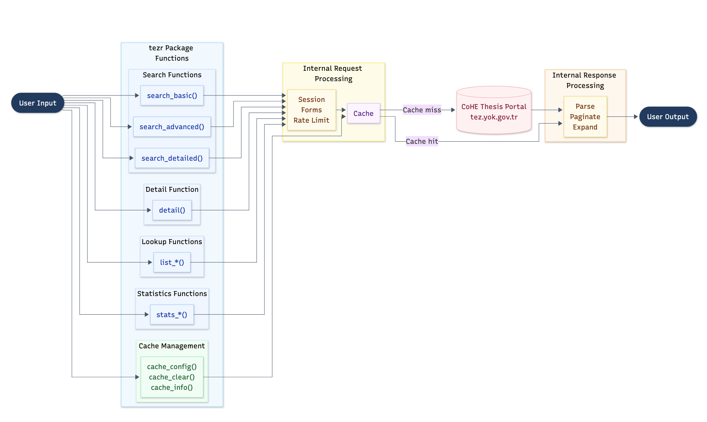

This note documents why tezr has its current structure. It is written for rOpenSci review and future maintenance.
Design History
tezr began as infrastructure for a paper. The paper needed thesis-level data from Türkiye’s National Thesis Center, the mandatory national archive for graduate thesis records. The portal exposes rich public metadata, but it has no public API, no bulk export, no query language, and a 2,000-record visible result cap. A paper based on broad National Thesis Center searches therefore needed scripted retrieval, deduplication, and completeness checks rather than manual downloads from the web interface.
The first package version translated that paper need into R functions. The early package scaffold implemented the portal’s basic, advanced, and detailed search modes, plus detail-page retrieval. This kept the package close to the source portal and made it possible to compare package results with web-interface results.
The next development stage came from using the package to build manuscript data. Broad economics searches exposed the practical limits of the portal. Searches could exceed the 2,000-record cap, detail records were needed for advisor, abstract, keyword, subject, and access-status fields, and repeated manuscript runs would otherwise hit the same portal pages many times. That stage produced year-range pagination, session-local caching, lookup helpers, richer detail parsing, aggregate statistics, and tests based on saved fixtures.
The manuscript then developed around economics applications. Those applications were useful stress tests for tezr, but they are not the package’s public scope. The paper is still being revised in a new version, so tezr now keeps a clear boundary between retrieval and analysis. The package retrieves, parses, paginates, caches, and checks National Thesis Center metadata. Research projects decide what data snapshots to save and how to validate, model, and interpret them.
Before rOpenSci submission, the package was cleaned up for public review. The API was simplified, bilingual metadata fields were clarified, parser and pagination behavior were hardened, and package examples were changed to show representative output without requiring live portal requests. Request behavior is now documented through request_config(), a package-identifying user agent, request delays, retries, and responsible-use guidance. The parser was also updated after the National Thesis Center changed its search-result markup.
Architecture Overview

The exported API is small and task oriented. Most internal code exists to make those functions reliable against a web portal designed for interactive use.
Component Map
| Component | Files | Responsibility |
|---|---|---|
| Search API | R/search.R |
Exported searches, argument normalization, cache keys, pagination triggers, and result attributes |
| Forms | R/forms.R |
Portal form payloads for basic, advanced, and detailed searches |
| Requests |
R/request.R, R/session.R
|
Sessions, cookies, headers, user agent configuration, retries, pacing, and shared search execution |
| Pagination | R/paginate.R |
Adaptive year-range splitting for searches above the 2,000-record cap |
| Search parsing | R/parse-results.R |
Search result pages to standard thesis rows |
| Detail retrieval | R/detail.R |
Single and batch detail requests, cache checks, bounded parallel fetching, and result binding |
| Detail parsing | R/parse-details.R |
Detail pages to bilingual metadata, advisor fields, subjects, keywords, access status, and public links |
| Lookups |
R/lookup.R, data-raw/sysdata.R
|
Portal labels and identifier resolution |
| Statistics | R/statistics.R |
Portal aggregate counts by year, university, subject, and thesis type |
| Cache | R/cache.R |
Session-local caches for searches, year ranges, details, and lookup values |
| Utilities |
R/utils.R, R/constants.R
|
Text cleaning, validation, language labels, endpoints, and shared helpers |
Retrieval Flows
A search call starts in search_basic(), search_advanced(), or search_detailed(). R/search.R validates the arguments, resolves portal identifiers when needed, and asks R/forms.R to build the form payload. R/request.R then checks the search cache and submits the form when no usable cache entry exists. R/parse-results.R parses the returned page.
If the portal reports more records than it returned, R/search.R decides whether pagination is possible. R/paginate.R splits the query into year ranges, fetches each range, merges the rows, deduplicates by thesis number, and records incomplete single-year ranges as attributes.
A detail call starts with detail_id values returned by a search. R/detail.R separates cached and uncached records. It requests uncached detail pages in bounded batches, then R/parse-details.R parses the richer metadata into one row per thesis.
Lookup and statistics calls are simpler. They read portal-provided lists or aggregate tables, normalize them, cache them when appropriate, and return tibbles.
Main Design Decisions
Mirror the portal instead of inventing a query language
The National Thesis Center is organized around forms. tezr keeps that model so package calls can be compared with the source portal. search_detailed() accepts vector-valued inputs for convenience, expands them into portal-compatible calls, and deduplicates the merged records.
Use year-range pagination for broad searches
The 2,000-record cap is the main retrieval constraint. Year ranges are available in the advanced and detailed forms, have a clear order, and preserve the user’s substantive filters. The paginator re-splits overflowing ranges until it reaches single years. It warns when a single year still exceeds the cap.
Keep detail retrieval separate
Search results are useful for screening and deduplication. Detail pages contain the fields needed for analysis, including advisors, abstracts, keywords, page counts, access status, and public links. Keeping detail() separate lets users request full records only when they need them.
Cache only within the R session
The cache reduces repeated portal requests during interactive work and examples. It does not create hidden persistent state. Users who need durable data should save returned objects explicitly in their analysis workflow.
Keep parser logic explicit
The portal returns bilingual metadata, inconsistent labels, encoded identifiers, old and new result layouts, and detail pages with missing or duplicated fields. The parser code uses small named helpers so each case can be tested and fixed without changing the public API.
Build in responsible request behavior
The package identifies itself with a package-specific user agent by default. It paces requests, retries transient failures, refreshes stale sessions, and documents user-agent overrides for institutional or network requirements. It retrieves public metadata and does not download thesis full text at scale, bypass access restrictions, collect credentials, or store private user data.
Why the Package Looks Large in Static Checks
The package exports 17 functions, but static checks see a larger internal function graph. That shape is deliberate. Most of the internal surface supports one of four needs.
- Search modes need separate normalization, form, cache, request, and pagination paths.
- Parsers need to handle bilingual fields, missing values, portal labels, detail identifiers, and markup changes.
- Pagination needs queue management, range cache keys, split heuristics, overflow warnings, deduplication, and completeness attributes.
- Tests need fixture-driven coverage for result pages, detail pages, cache behavior, lookup behavior, request behavior, and edge cases.
The design favors narrow helpers over large scraping functions because each helper has a clear failure mode. That matters for a package that depends on a live web portal rather than a stable API contract.
Boundaries
The current design leaves several things out.
- No browser automation. Plain HTTP requests are easier to test and run in non-interactive environments.
- No persistent package cache. Durable storage belongs in the user’s analysis repository.
- No full-text harvesting. The package focuses on public metadata and respects access-status signals.
- No automatic splitting across every possible field. That could reduce some single-year overflow cases, but it would multiply requests and make retrieval harder to explain.
- No downstream bibliometric toolkit. Packages such as
bibliometrix,igraph,stm, and ordinary tidyverse tools are better suited for analysis aftertezrretrieves the metadata.
Maintenance Notes
The most likely maintenance burden is portal markup change. The package is organized so future fixes can target the affected layer.
- Form changes should mostly affect
R/forms.Rand search argument handling inR/search.R. - Session or header changes should mostly affect
R/session.RandR/request.R. - Result-page changes should mostly affect
R/parse-results.Rand its fixtures. - Detail-page changes should mostly affect
R/parse-details.Rand its fixtures. - Pagination behavior should mostly affect
R/paginate.R.
When parser behavior changes, update or add fixtures in tests/testthat/fixtures before changing high-level search behavior. This keeps live portal variation separate from package regressions.